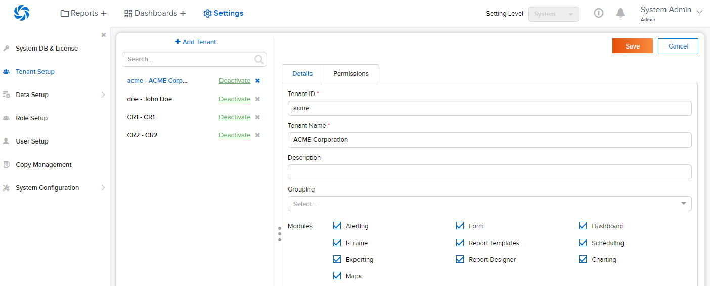

Tenant Setup¶
The Tenant Setup page allows user to
- manage tenants
- manage tenant’s modules
- manage tenant’s permissions
Note
When in integrated mode (DeploymentMode <> 0) adding and removing tenants from the UI is not available. This is to ensure the host application and Izenda stay in sync. API’s must be used for these functions in integrated environments. For more information on the API’s please review the documentation here.
List and View Tenants¶
- 
Fig. 126 Tenant Setup
In browser, log in to Izenda as an Admin.
Click Settings, then Tenant Setup in the left menu. (Fig. 126)
List of tenant ids and tenant names will be displayed in the Middle Panel.
Click any tenant in the list.
The tenant’s information will be displayed in the Details section.
{kind=link}
Search for Tenants¶
The Search box at the top allows user to search for specific tenants.
{kind=link}
Add Tenant¶
-
Click the + Add Tenant button at the top. (Fig. 128)
The Details section will be cleared for user to enter the tenant information.
Click the Save button at the top, then OK in the confirmation pop-up.
-
A successful notification message will be displayed and the new tenant will also appear in the list in Middle Panel. (Fig. 129) Tenant ID and Tenant Name are required and unique and will be checked before saving.
{kind=link}
{kind=link}
Edit Tenant Details¶
Click the tenant in the list in Middle Panel.
The tenant’s information is displayed in the Details section.
Edit the information.
Click the Save button at the top, then OK in the confirmation pop-up.
Tenant ID and Tenant Name are required and unique and will be checked before saving.
Deactivate Tenant¶
- Untick the Active check-box (☑) of the tenant in Middle Panel.
- Click OK in the confirmation pop-up.
- The tenant becomes inactive. It is no longer available for selection and its users can no longer log into the system.
Note
The Cancel button at the top will have no effect in this case.
Delete Tenant¶
- Click the Delete icon (x) of each tenant.
- Click OK in the confirmation pop-up.
- The tenant is deleted together with all the connection, data sources and users.
Note
The Cancel button at the top will have no effect in this case.
Edit Tenant Permissions¶
Click the tenant in the list in Middle Panel.
The tenant’s permissions are displayed in the Permissions section.
The permissions are grouped into sections, each with a short-cut link placed at the top of the page.
Tick the Tenant Access check-box in each permission/group to allow the tenant admins to manage that permission/group by themselves.
Click the Save button at the top to save the permissions.
{kind=link}
Most of the permissions are straight-forward: tick the check-box to give that permission to the tenant.
Some advanced permissions:
Reports > Data Sources
Select Simple Data Sources to restrict tenants to using only data sources already having relationships with each other. Meanwhile, Advanced Data Sources will allow tenants to use any data sources then build relationships by themselves.
Reports > Report Categories/Subcategories > Category Accessibility and Dashboards > Dashboard Categories/Subcategories > Category Accessibility
Move a category/subcategory from Available to Visible to allow tenants see it (and its child reports/dashboards) in Report List/Dashboard List. Move a category/subcategory from Visible to Saving to further allow tenants to save/move/copy reports/dashboards into it.
Access > Access Limits
Move a role/user from Available to Allowed to share will enable tenants to share reports/dashboards with that role/user.
Access > Access Default
Add sharings here similar to Report Designer/Access to be used as default sharings for any newly-created report/dashboard.
Scheduling > Scheduling Limits
Move a role/user from Available to Allowed to share will enable tenants to set up schedule deliveries to send to this role/user.